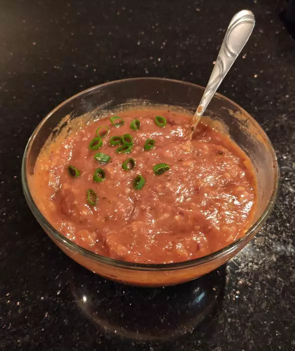

Lenten Chili

- ⏲️ Prep time: 10 min
- 🍳 Cook time: 30 min
- 🍽️ Servings: 4
Ingredients
- 1 large onion, chopped
- 3 cloves garlic, minced
- 4 15oz cans of kidney beans (or 6 cups cooked beans)
- 1 29oz large can tomato sauce (or 4 cups fresh tomato sauce)
- 1 15oz can diced tomatoes (or 1 large diced tomato with skin removed)
- ½ can of sweet corn
- 1 cup cooked white or brown rice
- 1 tsp cumin
- 1 tsp smoked paprika
- 1 tsp garlic powder
- 1 tsp onion powder
- 1 tbsp chili powder
- 1 tbsp crushed red pepper
- 2-3 tbsp olive oil
Directions
- Chop the large onion and mince the garlic cloves.
- On medium-low heat in a large tall pot add 2-3 tbsp olive oil.
- Add the chopped onions into the pot with oil and constantly stir for 5-10 minutes until they begin to brown.
- Just before onions are done add the minced garlic to the pot and let cook for 1-2 minutes.
- Add the tomato sauce, diced tomatoes, sweet corn, beans, and rice.
- Turn up the heat to medium.
- Add each of the spices, taste the chili, and adjust flavoring accordingly.
- Let cook for 20-30 minutes, stirring occasionally.
Let cool for a few minutes and then serve in bowls.
Contribution
- Yorge Z – github
Recipe tags: fasting